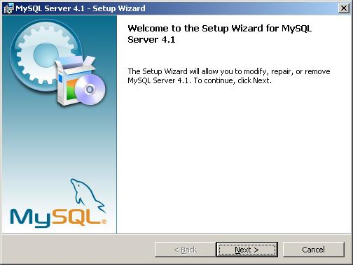

| MySQL Installation and Configuration for Windows | |
This document describes the MySQL installation and configuration process for Windows. These instructions have been tested with MySQL 4.1.8 and 5.0.
Download the Windows installer for MySQL from http://dev.mysql.com/downloads/.
To install the MySQL package, follow the subsequent steps:
Execute the installer, e.g. mysql-4.1.8-Setup.exe.
At the first screen, simply press 'Next'.
At the following screen, choose either 'Typical' or 'Complete'. Advanced users may choose 'Custom'. If you are unsure, choose 'Typical'. Once you have made your selection, press the `Next' button.
At the next screen, review your selections. When you are sure that you have made the correct choices, press the 'Install' button. If you want to make changes, use the `Back' button to go back and correct your previous choices.
Once the installation process has completed, you will be asked to sign up for or log in to a MySQL.com account. This manual does not cover the processes that those choices would entail. Make your choice and select the 'Next' button
Ensure that the 'Configure the MySQL Server now' checkbox is checked on the next screen and press 'Finish' to continue on to the configuration phase.
To configure MySQL for use with UrbanSim, follow the instructions below.
To begin the configuration process, simply press the 'Next' button.
On the next screen, choose the 'Detailed Configuration' option and press the 'Next' button.
The following screen asks you to select a server type. Choose an option that is appropriate to your needs, or select 'Developer Machine' if you are unsure. When you have made your choice, press the 'Next' button.
When prompted for the type of database usage, please choose 'Non-transactional Database Only' to configure the server to be compatable with UrbanSim. (The MyISAM format stores each table as a set of three files: a .frm, a .MYD, and a .MYI file. The InnoDB format does not use these files.) Press the 'Next' button.
On the next screen, press the 'Next' button.
When asked to set networking options, leave the defaults and press the 'Next' button.
On the following screen, make sure the 'Standard Character Set' option is selected and proceed by pressing the 'Next' button.
When asked to set Windows options, check 'Include Bin Directory in Windows PATH'. The rest of the defaults are correct. Press the 'Next' button.
On the next screen, enter your password twice into the provided fields and press 'Next'. If you cannot press 'Next', the passwords do not match and must be re-entered.
Press 'Execute' on the next screen to apply the configuration.
Finally, press the 'Finish' button once all the changes have been applied.
Open Start > Programs > MySQL > MySQL Server 4.1 > MySQL Command Line Client and enter the password you entered in the configuration step. Enter each of the three commands exactly as shown below, replacing each instance of your_password with the password you chose before.
GRANT create, delete, drop, index, insert, select, update, alter,
create temporary tables, file, reload ON *.*
TO urbansim@localhost IDENTIFIED BY 'your_password';
SET PASSWORD FOR 'urbansim'@'localhost' = OLD_PASSWORD('your_password');
FLUSH PRIVILEGES;
After completing this step, close the MySQL Command Line Client window.
You have completed the installation and configuration of MySQL for use with UrbanSim.
If you want to use MySQL with Opus or UrbanSim, you will also need MySQL-python. If you have not already done so, please install it, as noted in the general installation instructions.